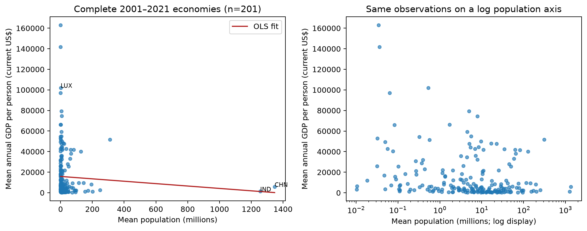

The Activity
Unit 4 · Run 29 October 2026 · Tutor: Dr Elizabeth Oladapo · Evidences learning outcomes 1 and 2
Activity guidance: run each step of the supplied fuel-consumption demo, then use Global_Population.csv and Global_GDP.csv to correlate (Task A) and regress (Task B) the mean population of each country against its mean GDP per person from 2001 to 2021.
Findings
| Step (n) | What I did | Result |
|---|---|---|
| Fuel demo (1,067 cars) | Made five corrections, then fitted CO₂ on engine size with a seeded 80/20 split | Test R² 0.778; mean absolute error 22.58 g/km, against 51.50 for always predicting the training mean. |
| Data preparation | Divided each year’s total GDP by that year’s population before averaging | The supplied GDP was total GDP and stopped at 2020; 49 regional and income-group totals and 16 economies without 21 complete years were removed. |
| Task A (201 economies) | Pearson correlation of mean population with mean GDP per person, 2001 to 2021 | r = −0.0667: almost no straight-line relationship. |
| Task B (201 economies) | Linear regression of mean GDP per person on mean population | Slope −US$11.66 per million residents; R² 0.00445 on the fitted data. |
| Holdout check (160 / 41) | Refitted on 160 economies and predicted the other 41 | Test R² −0.038; mean absolute error US$14,531 against US$14,860 for the training mean: no useful gain. |

Population alone says almost nothing about GDP per person: the line is nearly flat, and on held-out countries it predicts no better than the average. The main lesson was in the preparation. The supplied GDP file held total GDP, not GDP per person, and a default load would not have shown it. Keeping only complete records may favour countries with better reporting, and World Bank data must be credited under its CC BY 4.0 licence (World Bank, 2026b).
Evidence
I ran the notebook on my own computer. Its first code cell records the run, and all 29 code cells completed without errors:
Run by Anne Dayer (student 39359) on my computer on 29 October 2026 at 17:16 UTCAI Acknowledgement
Codex was used to assist in identifying appropriate code solutions and to proofread and refine the code I produced. Claude and Grammarly supported proofreading, language refinement, and formatting of my written text. All final decisions, analyses, interpretations, conclusions, and recommendations are my own.
References
World Bank (2026a) World Development Indicators: GDP (current US$), population and economy metadata [Dataset]. Indicator codes NY.GDP.MKTP.CD and SP.POP.TOTL. Data update 8 October 2026. Available at: https://data.worldbank.org/indicator/NY.GDP.MKTP.CD and https://data.worldbank.org/indicator/SP.POP.TOTL (Accessed: 24 October 2026).
World Bank (2026b) GDP (current US$): licence CC BY 4.0. Available at: https://data.worldbank.org/indicator/NY.GDP.MKTP.CD (Accessed: 24 October 2026).